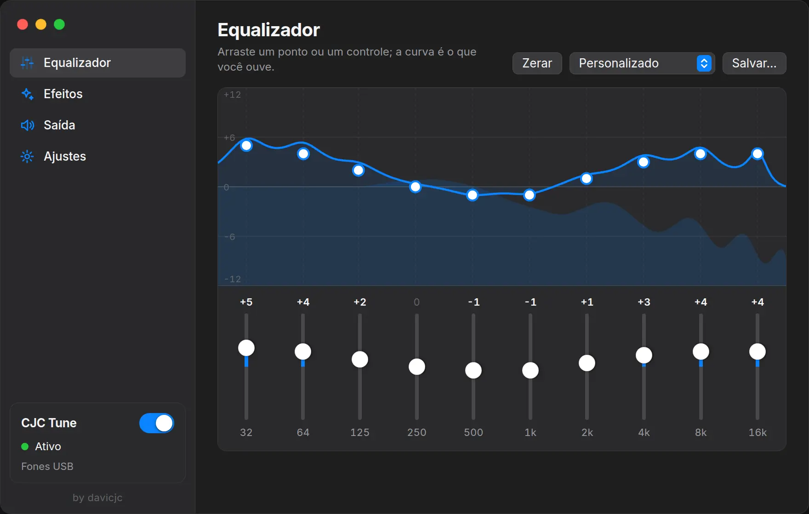
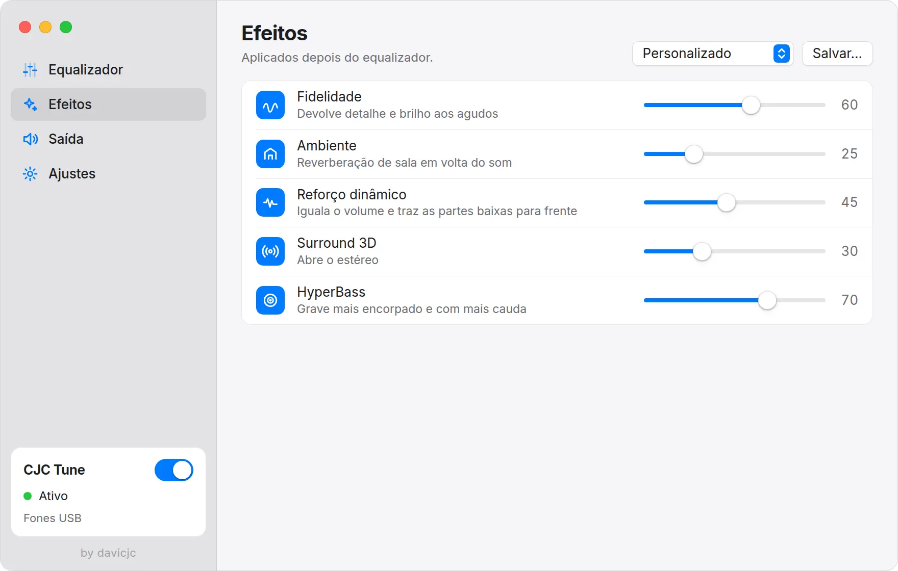
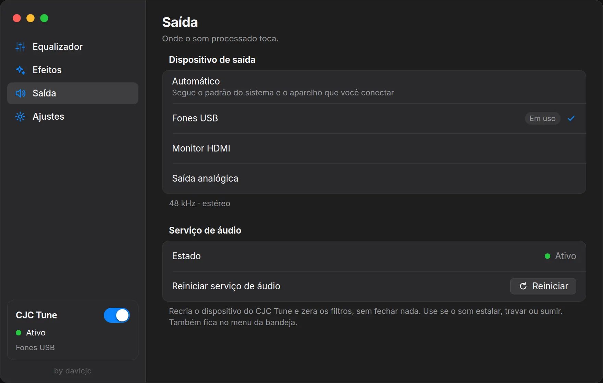
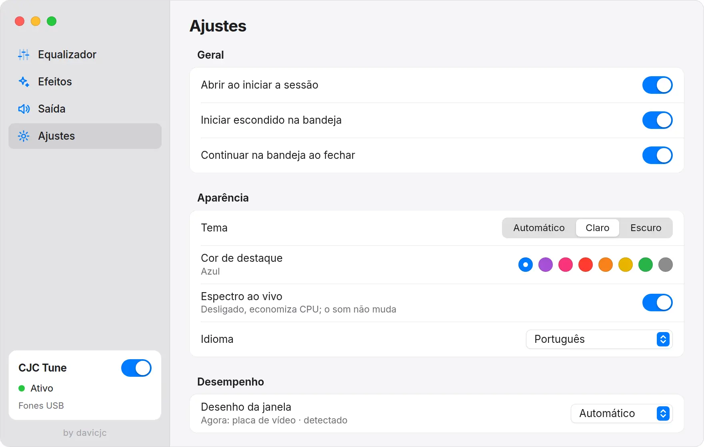

AppImage
Roda em qualquer distribuição, sem instalar.
chmod +x cjc-tune_1.0.0_amd64.AppImage
./cjc-tune_1.0.0_amd64.AppImageEqualizador para Linux
Música, filmes, jogos e chamadas passam pelo CJC Tune antes de chegar no seu fone. Equalizador de 10 bandas, efeitos e predefinições suas, sem configurar programa por programa.
Grátis e de código aberto · versão 1.0.0 · AppImage e .deb

O CJC Tune cria uma saída chamada CJC Tune e coloca ela como padrão. Os programas tocam nela sem saber de nada; o CJC Tune processa e manda para o aparelho de verdade.
Se você troca de fone no sistema, ele vai junto. Se o servidor de áudio cair, ele volta sozinho. Se fechar o app, o som volta para a saída normal.
Uma batida gerada no seu navegador passa pelos mesmos dez filtros do app, com as mesmas frequências e a mesma largura. Mude a predefinição, arraste a curva e compare.
Toca baixo. Use fone para ouvir o grave.
Som estalou ou sumiu? Um clique na bandeja recria o dispositivo e zera os filtros, sem fechar nada.
Salve variações do seu som. O Personalizado não se perde quando você testa outra predefinição.
Mostra qual aparelho está em uso e segue o fone que você conectar.
Feche a janela e o som continua processado. Pode abrir junto com a sessão, já escondido.
Saiu versão nova, aparece Atualizar. O AppImage baixa, confere o SHA-256 e reabre sozinho.
Tema automático, 8 cores de destaque, português, inglês, espanhol e chinês.
Barra lateral, grupos limpos, controles que você já conhece.




Roda em qualquer distribuição, sem instalar.
chmod +x cjc-tune_1.0.0_amd64.AppImage
./cjc-tune_1.0.0_amd64.AppImageDebian, Ubuntu, Linux Mint e derivados.
sudo apt install ./cjc-tune_1.0.0_amd64.debPrecisa de PipeWire ou PulseAudio (os padrões de hoje). Usava o FXSound for Linux? Feche ele antes: na primeira vez, o CJC Tune traz o seu EQ e os efeitos de lá.
Funciona em qualquer distribuição com PipeWire ou PulseAudio. O AppImage roda em todas; o .deb é para Debian, Ubuntu, Mint e derivados. O código é testado com PipeWire e com PulseAudio de verdade a cada mudança.
Sim. É código aberto, licença MIT, sem conta, sem anúncio.
Sim. Ele processa a saída do sistema inteiro, então vale para qualquer programa que toque som, sem configurar cada um.
Clique com o botão direito no ícone da bandeja e escolha Reiniciar serviço de áudio. Ele recria o dispositivo e zera os filtros em um instante. Também existe na tela Saída e por comando: pkill -USR2 cjc-tune.
Não. A única conexão é a consulta ao GitHub para saber se existe versão nova, e você pode desligar nos Ajustes.
O CJC Tune nasceu do FXSound for Linux, um projeto comunitário de código aberto (licença MIT), e ganhou interface, organização e recursos próprios. Não tem ligação com o FxSound do Windows.
AppImage: apague o arquivo. .deb: sudo apt remove cjc-tune. Fechar o app sempre devolve o som para a saída normal.